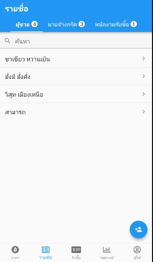
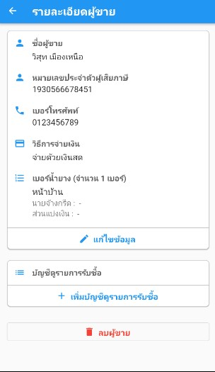
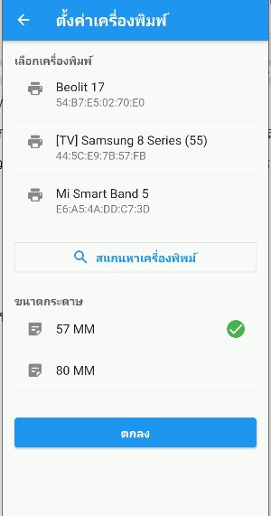

คู่มือใช้งานแอปพลิเคชันรับซื้อน้ำยางสด (Latex App)
- 1. การติดตั้งแอปพลิเคชัน
- 2. การลงทะเบียนใช้งานแอปพลิเคชัน
- 3. การเข้าสู่ระบบแอปพลิเคชัน
- 4. การจัดการราคารับซื้อ
- 5. การจัดการรายชื่อผู้ขาย
- 6. การจัดการรายชื่อนายจ้างกรีด
- 7. การเพิ่มและลบพนักงานรับซื้อ
- 8. การจัดการรายการรับซื้อน้ำยางสด
- 9. การออกรายงานการรับซื้อ
- 10. การวิเคราะห์ข้อมูลรับซื้อ
- 11. การตั้งค่าเครื่องพิมพ์
- 12. การอนุญาตให้ผู้ขายดูข้อมูลการซื้อขาย
- 13. การใช้งานสำหรับผู้ขายหรือนายจ้างกรีด
- 14. การจัดการบัญชีผู้ใช้
- 15. การออกจากระบบ
- 16. วีดีโออธิบายการใช้งานแอปพลิเคชันรับซื้อน้ำยางสด
1. การติดตั้งแอปพลิเคชัน
ผู้ใช้งานทั้งผู้รับซื้อแล้วผู้ขายสามารถใช้สมาร์ทโฟนแอนดรอย์เข้าไปติดตั้งแอปพลิเคชันรับซื้อน้ำยางสดได้จาก Google Play โดยแอปพลิเคชันจะมีชื่อว่า Latex App - รับซื้อน้ำยางสด หรือกดที่ลิงก์ด้านล่างเพื่อเปิดหน้าจอสำหรับการติดตั้งแอปพลิเคชัน จากนั้นกดปุ่มติดตั้ง
ลิงก์แอปพลิเคชัน https://play.google.com/store/apps/details?id=com.pie62.latex_project
2. การลงทะเบียนใช้งานแอปพลิเคชัน
เปิดแอปพลิเคชันขึ้นมา จากนั้นทำการกดปุ่มลงทะเบียน ทำการเลือกประเภทการลงทะเบียน ซึ่งมี 3 ตัวเลือก คือ ผู้ขายหรือนายจ้างกรีด ผู้รับซื้อ และพนักงานรับซื้อ จากนั้นทำการกรอกข้อมูลต่างๆให้ครบถ้วน แล้วกดปุ่มลงทะเบียน
หลังจากกรอกข้อมูลต่างๆและกดปุ่มลงทะเบียนแล้ว หน้าจอของแอปฯจะเปลี่ยนไปตามประเภทของการลงทะเบียน ซึ่งมีรายละเอียดดังนี้
- ผู้ขายหรือนายจ้างกรีด เมื่อลงทะเบียนแล้วแอปฯจะเปิดหน้าจอแสดง QR Code สำหรับนำไปให้ผู้รับซื้อสแกนเพื่อขอดูข้อมูลการขาย
- ผู้รับซื้อ แอปฯจะเปิดหน้าจอสำหรับการกำหนดข้อมูลของผู้รับซื้อ ให้ผู้ใช้ทำการกรอกข้อมูลให้เรียบร้อย แล้วกดปุ่มบันทีก
- พนักงานรับซื้อ แอปฯจะเปิดหน้าจอแสดง QR Code ของพนักงานรับซื้อ ให้นำไปให้ผู้รับซื้อสแกนเพื่อเพิ่มเป็นพนักงานรับซื้อ
3. การเข้าสู่ระบบแอปพลิเคชัน
สำหรับผู้ใช้งานที่เคยทะเบียนใช้งานแอปฯแล้ว สามารถเข้าสู่ระบบได้โดยกรอกอีเมลและรหัสผ่าน จากนั้นกดปุ่มเข้าสู่ระบบ
4. การจัดการราคารับซื้อ
สำหรับการจัดการราคารับซื้อ ให้กดไปที่เมนูราคา ซึ่งสามารถกำหนดราคารับซื้อ แก้ไขราคารับซื้อ และดูประวัติราคารับซื้อได้
4.1 การกำหนดราคารับซื้อ
กดปุ่มกำหนดราคารับซื้อวันนี้ จากนั้นกดปุ่มเพิ่มช่วงราคา ใส่ข้อมูลราคา แล้วกดปุ่มบันทึกราคารับซื้อ
4.2 การแก้ไขราคารับซื้อ
สามารถแก้ไขราคารับซื้อได้โดยปุ่มแก้ไขราคารับซื้อ ทำการแก้ไขข้อมูลราคา แล้วกดปุ่มบันทึกราคารับซื้อ
4.3 การดูประวัติราคารับซื้อ
กดปุ่มประวัติราคารับซื้อ จากนั้นแอปฯจะเปิดหน้าจอประวัติราคารับซื้อ
5. การจัดการรายชื่อผู้ขาย
ให้กดไปที่เมนูรายชื่อ แล้วกดไปยังแถบเมนูผู้ขาย แอปฯจะแสดงรายชื่อทั้งหมดของผู้ขาย ซึ่งสามารถกดเข้าไปดูรายละเอียดต่างๆของผู้ขายแต่ละคนได้
 5.1 การเพิ่มผู้ขาย
กดปุ่ม + (ไอคอนรูปคน) จากนั้นทำการกรอกข้อมูลผู้ขาย ระบุวิธีการจ่ายเงิน และต้องเพิ่มเบอร์น้ำยางอย่างน้อย 1 เบอร์ เมื่อกรอกข้อมูลต่างๆ เสร็จสิ้นแล้ว ให้กดปุ่มบันทึก
5.2 การแก้ไขข้อมูลผู้ขาย
กดดูรายละเอียดของผู้ขายที่ต้องการแก้ไข จากนั้นให้กดปุ่มแก้ไขข้อมูล ทำการแก้ไขข้อมูลต่างๆที่ต้องการ เมื่อเสร็จแล้วให้กดปุ่มบันทึกข้อมูล
5.3 การลบผู้ขาย
กดดูรายละเอียดของผู้ขายที่ต้องการลบ จากนั้นให้กดปุ่มลบผู้ขาย แอปฯจะแสดงหน้าจอให้ยืนยัน ให้ทำการกดปุ่มตกลง
6. การจัดการรายชื่อนายจ้างกรีด
ให้กดไปที่เมนูรายชื่อ แล้วกดไปยังแถบเมนูนายจ้างกรีด แอปฯจะแสดงรายชื่อทั้งหมดของนายจ้างกรีด ซึ่งสามารถกดเข้าไปดูรายละเอียดต่างๆของนายจ้างกรีดแต่ละคนได้
6.1 การเพิ่มนายจ้างกรีด
กดปุ่ม + (ไอคอนรูปคน) จากนั้นทำการกรอกข้อมูลของนายจ้างกรีด ระบุวิธีการจ่ายเงิน เมื่อกรอกข้อมูลต่างๆ เสร็จสิ้นแล้ว ให้กดปุ่มบันทึก
6.2 การแก้ไขข้อมูลนายจ้างกรีด
กดดูรายละเอียดของนายจ้างกรีดที่ต้องการแก้ไข จากนั้นให้กดปุ่มแก้ไขข้อมูล ทำการแก้ไขข้อมูลต่างๆที่ต้องการ เมื่อเสร็จแล้วให้กดปุ่มบันทึกข้อมูล
6.3 การลบนายจ้างกรีด
กดดูรายละเอียดของนายจ้างกรีดที่ต้องการลบ จากนั้นให้กดปุ่มลบนายจ้างกรีด แอปฯจะแสดงหน้าจอให้ยืนยัน ให้ทำการกดปุ่มตกลง
7. การเพิ่มและลบพนักงานรับซื้อ
สำหรับการเพิ่มพนักงานรับซื้อนั้น ให้กดไปที่เมนูรายชื่อ แถบเมนูพนักงานรับซื้อ จากนั้นกดปุ่ม + (ไอคอนรูปคน) แอปฯจะเปิดหน้าจอสำหรับสแกน QR Code ขึ้นมา ให้นำไปสแกน QR Code ของพนักงานรับซื้อ จากนั้นให้กดยืนยันการเพิ่ม เป็นอันเสร็จสิ้น ส่วนการลบพนักงานรับซื้อนั้น ให้กดปุ่มลบหลังชื่อพนักงานที่ต้องการ จากนั้นกดยืนยันการลบ
8. การจัดการรายการรับซื้อน้ำยางสด
สำหรับการจัดการรายการรับซื้อนั้น ให้กดไปที่เมนูรับซื้อ แอปฯจะแสดงยอดรวมการรับซื้อประจำวัน และรายการที่กำลังรับซื้อ รวมถึงสถานะต่างๆ ของรายการ สามารถกดเพื่อเปิดดูรายละเอียดต่างๆ ได้
8.1 การรับซื้อน้ำยางสด
ในการรับซื้อน้ำยางสดนั้นให้กดปุ่ม + มุมขวาล่างเพื่อสร้างรายการรับซื้อ ทำการเลือกหมายเลขถ้วยวัด เลือกชื่อผู้ขาย เบอร์น้ำยาง รวมถึงกรอกข้อมูลต่างๆ จากนั้นทำการกดปุ่มบันทึก รายการรับซื้อที่สร้างก็จะขึ้นแสดงในหน้ารายการรับซื้อ
เมื่อทำการสร้างรายการรับซื้อและระบุข้อมูลในการรับซื้อต่างๆ จนครบถ้วนแล้ว ให้กดไปที่ปุ่มรายละเอียดการจ่ายเงิน เพื่อตรวจสอบว่าต้องจ่ายเงินให้กับผู้ขายหรือนายจ้างกรีดด้วยวิธีใด และเท่าไหร่ ซึ่งหากเป็นการจ่ายเงินด้วยการโอนด้วยบัญชีธนาคาร หรือการโอนด้วย PromtPay จะต้องทำการโอนเงินและแนบหลักฐานการโอนให้เรียบร้อยก่อน ซึ่งแอปฯจะมีปุ่มสำหรับคัดลอกหมายเลขบัญชีหรือคัดลอกหมายเลข PromtPay เพื่อความสะดวกในการโอนเงิน โดยสามารถแนบหลักฐานการโอนเงินโดยการกดปุ่มแนบหลักฐานการโอนเงิน จากนั้นให้ทำการเลือกรูปหรือถ่ายรูปหลักฐานการโอนเงินที่ต้องการ
และหากเป็นการโอนด้วย PromtPay สามารถกดปุ่มสร้าง PromtPay QR Code แล้วบันทึกเป็นรูปภาพเพื่อนำไปสแกนและโอนเงินในแอปฯประเภท Mobile Banking ได้สะดวกยิ่งขึ้น
เมื่อทำการระบุข้อมูลรับซื้อและแนบหลักฐานการโอนเงินเรียบร้อยแล้ว ให้กดปุ่มเสร็จสิ้นในหน้ารายละเอียดรายการรับซื้อ และกดปุ่มตกลงเพื่อยืนยันการเสร็จสิ้นการรับซื้อของรายการนั้นๆ
8.2 การแก้ไขข้อมูลรายการรับซื้อ
สำหรับรายการรับซื้อที่ยังระบุข้อมูลการรับซื้อไม่ครบถ้วน หรือต้องการแก้ไขข้อมูลต่างๆ สามารถทำได้โดยกดดูรายละเอียดรายการรับซื้อที่ต้องการ แล้วกดปุ่มแก้ไข แอปฯจะเปิดหน้าจอแก้ไขข้อมูลรายการรับซื้อขึ้นมา ให้ทำการแก้ไขข้อมูลที่ต้องการ จากนั้นทำการกดปุ่มบันทึก
8.3 การลบรายการรับซื้อ
สามารถลบรายการรับซื้อได้โดยการกดดูรายละเอียดรายการรับซื้อที่ต้องการลบ จากนั้นให้กดปุ่มลบ แอปฯจะแสดงหน้าจอให้ทำการยืนยันการลบ ให้กดตกลงเพื่อทำการลบรายการรับซื้อ
8.4 การดูประวัติการรับซื้อ
สำหรับการเรียกดูประวัติรายการรับซื้อนั้น ให้เปิดหน้าจอเมนูรับซื้อ กดปุ่มจุดสามจุดมุมขวาบน แล้วกดเมนูประวัติรับซื้อ แอปฯจะเปิดหน้าจอประวัติรับซื้อขึ้นมา ให้เลือกวันที่ที่ต้องการจะดูประวัติ จากนั้นแอปฯจะแสดงรายการประวัติการรับซื้อของวันที่ต้องการ
9. การออกรายงานการรับซื้อ
ในการออกรายงานการรับซื้อ ให้เปิดหน้าจอเมนูรับซื้อ กดปุ่มจุดสามจุดมุมขวาบน แล้วกดเมนูรายงานรับซื้อ แอปฯจะเปิดหน้าจอสำหรับสร้างรายงานรับซื้อขึ้นมา ซึ่งสามารถสร้างได้ 3 แบบ คือ รายงานรับซื้อประจำวัน ประจำเดือน และประจำปี ให้ทำการเลือกวันเดือนปีที่ต้องการ จากนั้นกดปุ่มสร้างรายงาน เมื่อสร้างรายงานเสร็จให้กดปุ่มบันทึกเป็นรูปภาพเพื่อการนำไปใช้งานต่อได้สะดวก
10. การวิเคราะห์ข้อมูลรับซื้อ
ให้กดไปยังเมนูวิเคราะห์ แอปฯจะเปิดหน้าจอวิเคราะห์ข้อมูลขึ้นมา ให้ทำการเลือกช่วงเวลาที่ต้องการ จากนั้นกดปุ่มแสดงผล แอปฯจะทำการดึงข้อมูลการรับซื้อตามช่วงเวลาที่ต้องการมาทำการแสดงในแผนภูมิ รวมถึงสรุปข้อมูลการซื้อขายซึ่งสามารถดูได้โดยการกดปุ่มสรุปข้อมูล
11. การตั้งค่าเครื่องพิมพ์
แอปพลิเคชันรับซื้อน้ำยางสดนี้จะใช้เครื่องพิมพ์ใบเสร็จแบบใช้ความร้อนและต้องสามารถเชื่อมต่อด้วยบลูทูธได้ ซึ่งในการตั้งค่าเครื่องพิมพ์นั้นให้ผู้ใช้ทำการเปิดบลูทูธในอุปกรณ์มือถือ จากนั้นให้กดปุ่มเมนูตั้งค่าเครื่องพิมพ์ในหน้าบัญชีผู้ใช้ แอปฯจะสแกนหาเครื่องพิมพ์ประมาณ 5 วินาที จากนั้นให้เลือกเครื่องพิมพ์ เลือกขนาดกระดาษ แล้วจึงกดปุ่มตกลง
12. การอนุญาตให้ผู้ขายดูข้อมูลการซื้อขาย
สำหรับการอนุญาตให้ผู้ขายดูข้อมูลการซื้อขายนั้น ให้เปิดหน้ารายชื่อ กดเข้าไปยังรายชื่อผู้ขายหรือนายจ้างกรีดที่ต้องการให้ดูข้อมูล กดปุ่มเพิ่มบัญชีดูรายการรับซื้อ แอปฯจะเปิดหน้าจอสำหรับสแกน QR Code ให้ทำการสแกน QR Code ของบัญชีผู้ขาย (QR Code จะแสดงอยู่ในหน้าจอบัญชีผู้ใช้ฝั่งผู้ขาย) เมื่อทำการสแกนเสร็จแอปฯจะเปิดหน้าจอยืนยัน ให้กดปุ่มตกลง จากนั้นผู้ใช้งานฝั่งผู้ขายคนนั้นๆก็จะสามารถดูข้อมูลการซื้อขายของผู้ขายหรือนายจ้างกรีดคนนั้นๆได้
13. การใช้งานสำหรับผู้ขายหรือนายจ้างกรีด
สำหรับผู้ขายหรือนายจ้างกรีดนั้นจะสามารถใช้งานแอปพลิเคชันเพื่อดูข้อมูลการขาย ราคารับซื้อ รวมถึงวิเคราะห์ข้อมูลการขายได้ ซึ่งมีรายละเอียด ดังนี้
13.1 การขอดูข้อมูลการขายจากผู้รับซื้อ
ให้ทำการเปิดไปยังหน้าจอบัญชีผู้ใช้ แอปฯจะแสดง QR Code สำหรับนำไปให้ผู้รับซื้อสแกนเพื่ออนุญาตให้ดูข้อมูลการขายของผู้ขายที่ต้องการ
13.2 การดูราคารับซื้อ
ให้กดไปที่เมนูราคา แอปฯจะแสดงราคารับซื้อในวันนั้นๆ ของผู้รับซื้อที่ได้มีการขอดูข้อมูลไว้ และสามารถดูราคารับซื้อของวันที่ผ่านมาได้โดยกดปุ่มประวัติราคารับซื้อ
13.3 การดูข้อมูลรายการขาย
กดไปที่เมนูการขาย แอปฯจะแสดงรายการขายของวันนั้นๆ ผู้ใช้สามารถกดไปยังรายการขายที่ต้องการเพื่อดูรายละเอียดต่างๆ ได้ และสามารถดูประวัติการขายได้โดยการกดปุ่มประวัติการขายแล้วทำการเลือกเดือนที่จะดูประวัติการขาย
13.4 การวิเคราะห์ข้อมูลการขาย
สามารถวิเคราะห์ข้อมูลการขายได้โดยกดไปที่เมนูวิเคราะห์ ทำการเลือกรายชื่อและช่วงเวลาที่ต้องการ จากนั้นกดปุ่มแสดงผล แอปฯจะทำการดึงข้อมูลการขายตามช่วงเวลาที่ต้องการมาทำการแสดงในแผนภูมิ รวมถึงสรุปข้อมูลการขายซึ่งสามารถดูได้โดยการกดปุ่มสรุปข้อมูล
14. การจัดการบัญชีผู้ใช้
สำหรับการจัดการบัญชีผู้ใช้นั้น ให้เปิดเมนูบัญชีผู้ใช้ ซึ่งแอปฯจะแสดงชื่อ ประเภทของผู้ใช้ รวมถึงเมนูต่างๆ
14.1 การเปลี่ยนชื่อผู้ใช้
กดเมนูเปลี่ยนชื่อผู้ใช้ ทำการกรอกชื่อผู้ใช้ที่ต้องการ แล้วกดปุ่มบันทึก
14.2 การเปลี่ยนรหัสผ่าน
กดเมนูเปลี่ยนรหัสผ่าน ทำการกรอกอีเมลของผู้ใช้งาน จากนั้นกดปุ่มตกลง จากนั้นระบบจะส่งลิงก์สำหรับเปลี่ยนรหัสผ่านไปให้ทางอีเมลของผู้ใช้

14.3 การแก้ไขข้อมูลผู้รับซื้อ
กดเมนูแก้ไขข้อมูลผู้รับซื้อ ทำการแก้ไขข้อมูลต้องต้องการ จากนั้นกดปุ่มบันทึก
15. การออกจากระบบ
สำหรับการออกจากระบบ ให้กดเมนูออกจากระบบในหน้าบัญชีผู้ใช้ จากนั้นแอปฯจะแสดงหน้าต่างยืนยันการออกจากระบบ ให้กดปุ่มตกลง แอปฯก็จะออกจากระบบแล้วทำการเปิดกลับไปยังหน้าเข้าสู่ระบบอีกครั้ง